舉辦期間限定活動「復刻:從者夏日慶！ 輕量版」！
這裡無論誰都是初次參加。協助從者們以「從者★慶」的頂點為目標吧！
本活動中進行主線關卡的話，活動限定從者「★4(SR)貞德〔Alter〕(Berserker)」會以期間限定加入。
更推進主線關卡，讓「★4(SR)貞德〔Alter〕(Berserker)」吧！
※本頁面皆為開發中圖片。會有與實際圖片相異的情況。 ※本活動為再調整一部份在2018年舉辦的期間限定活動「從者夏日慶！」更容易遊玩的「復刻輕量版活動」。還有，在上次舉辦時由於按照一部份關卡的開放順序有著故事展開上的矛盾，變更一部份的關卡的開放條件。(7月17日(三) 17:00追記) ※為了改善識別性，「BB$鈔」的顏色從上次舉辦時變更。 ※關於真名尚未判明的從者，透過主線記錄關卡的進行會讓Servant的名稱變化。 ※一部份的關卡為日後開放。
◆活動舉辦期間◆ 2019年7月17日(三) 17:00～8月3日(六) 11:59
◆活動參加條件◆
滿足以下條件的御主才能參加
・通過「特異點F 炎上汙染都市 冬木」
※在期間限定活動「復刻:從者夏日慶！ 輕量版」舉辦期間中預定實施維修。維修中無法遊玩遊戲，請事先諒解。
■維修預定時間
2019年7月31日(三) 12:00～17:00(預定)
◆關於在上次舉辦時已獲得報酬的注意◆
在2018年舉辦的期間限定活動「從者夏日慶！」已獲得特定報酬的情況，會如以下變化。
・在上次舉辦時獲得過「聖杯」的情況，本活動中會以「傳承結晶」代替「聖杯」做為通過報酬。 ・在上次舉辦時獲得過「靈衣開放權」的情況，本活動中的對象關卡中可獲得稀有稜鏡代替「靈衣開放權」。 ・在上次舉辦時獲得過「指令紋章」的情況，本活動中的對象關卡中可獲得稀有稜鏡或魔力稜鏡代替「指令紋章」。
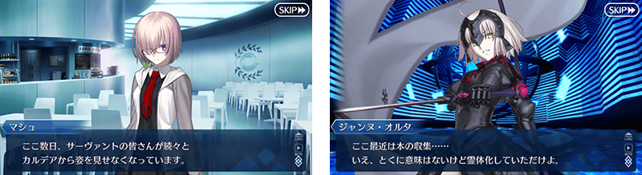
【7月17日(三) 17:00追記】
在「Fate/Grand Order」官方網站內首頁及Gallery，公開了期間限定活動「復刻:從者夏日慶！ 輕量版」的電視廣告。
敬請確認。
動畫製作：A-1 Pictures
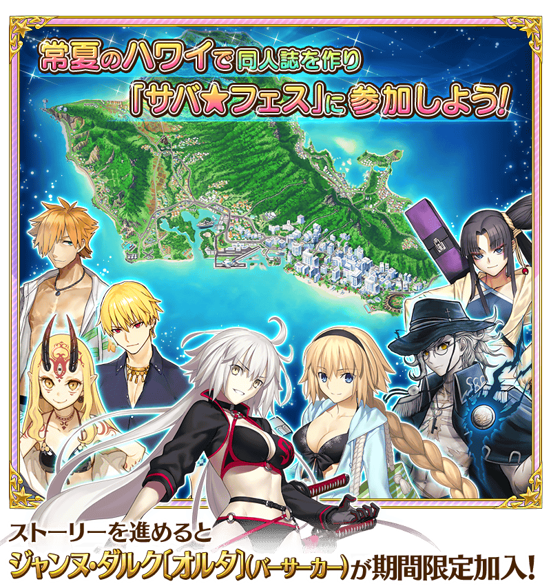

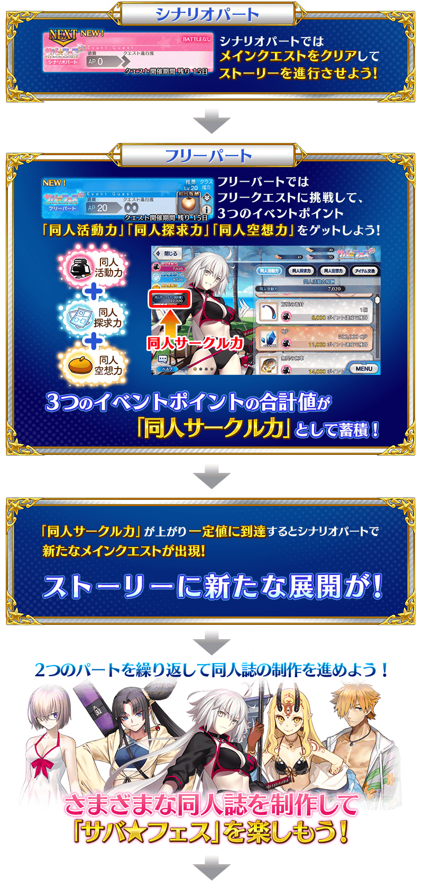
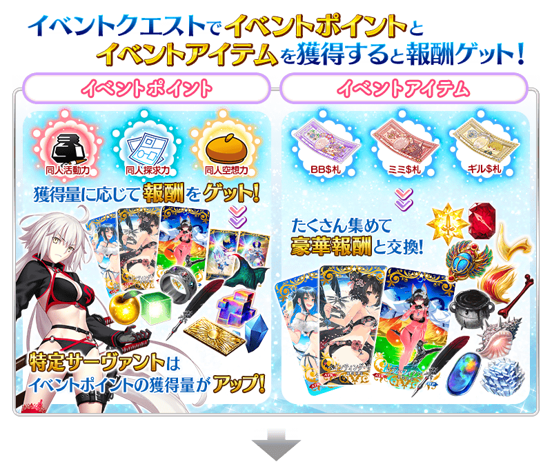
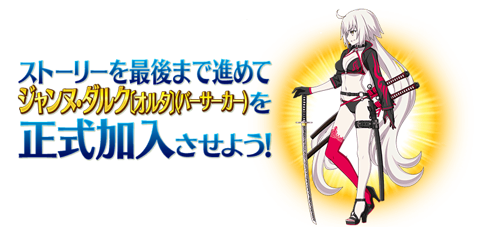
※通過在期間限定活動「復刻:從者夏日慶！ 輕量版」日後追加的關卡就能讓期間限定從者「★4(SR)貞德〔Alter〕(Berserker)」的寶具等級提升。請注意活動開始初期的階段無法提升寶具等級。
「同人活動力」「同人探求力」「同人空想力」的獲得量到達一定量的話，可獲得達成報酬。
點擊管理室(ターミナル)畫面右上的「活動報酬」鍵的話，可在顯示的「同人活動力報酬」「同人探求力報酬」「同人空想力報酬」畫面確認達成報酬。
※「同人活動力」「同人探求力」「同人空想力」的獲得量只計算活動關卡中掉落所獲得的「同人活動力」「同人探求力」「同人空想力」。

「★5(SSR)巖窟王 愛德蒙・唐泰斯」「★4(SR)吉爾伽美什(Caster)」「★3(R)羅賓漢」的靈衣開放權在期間限定活動「復刻:從者夏日慶！ 輕量版」登場！
主線關卡的進行及累積3個各活動點數(同人活動力、同人探求力、同人空想力)的話會出現可獲得靈衣的關卡，通過該關卡的話可得到靈衣開放權！
另外，靈衣開放權報酬的關卡只可在「復刻:從者夏日慶！ 輕量版」舉辦期間中挑戰。
想開放新追加「★5(SSR)巖窟王 愛德蒙・唐泰斯」的靈衣「モンテ･クリストセレクション」「★4(SR)吉爾伽美什(Caster)」的靈衣「エスタブリッシュメント」「★3(R)羅賓漢」的靈衣「夏の狩人」的話，除了靈衣開放權外必須再加上一些開放條件。
請注意未持有各靈衣開放權的對象從者的情況，還是能入手靈衣開放權，但無法進行靈衣開放。
關於詳情請在此處的公告確認。
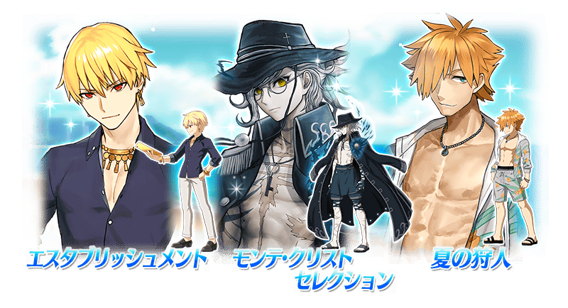
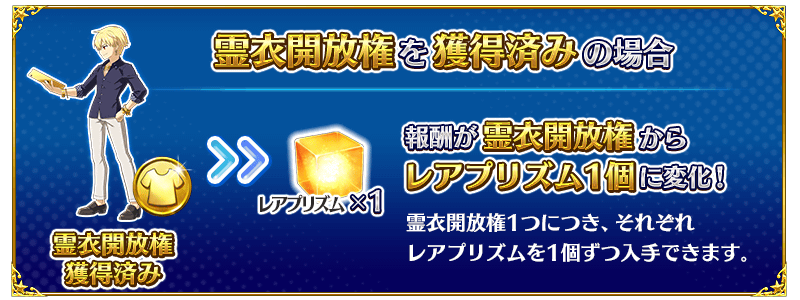
3種指令紋章做為期間限定活動「復刻:從者夏日慶！ 輕量版」的關卡通過報酬登場！
並且，也會出現可獲得「Quick·Code·Opener」「Arts·Code·Opener」「Buster·Code·Opener」「Code·Remover」的關卡！
累積3個各活動點數(同人活動力、同人探求力、同人空想力)的話就會出現3種指令紋章與關聯道具做為報酬的關卡，無論如何藉此機會得到吧！
各指令紋章的詳情請在此處確認。
另外，在2018年8月舉辦的期間限定活動「從者夏日慶！」中已獲得同樣指令紋章的情況，可獲得稀有稜鏡和魔力稜鏡代替指令紋章。 ※就算將期間限定活動「從者夏日慶！」中已獲得的各指令紋章靈基變還(販賣)而消失的情況，期間限定活動「復刻:從者夏日慶！ 輕量版」中的報酬也會變成稀有稜鏡和魔力稜鏡。
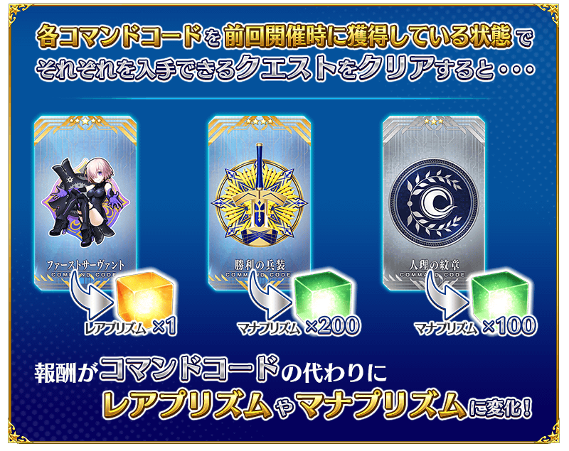
期間限定活動「復刻:從者夏日慶！ 輕量版」限定的新魔術禮裝「トロピカルサマー」登場！
推進主線關卡的話，專為獲得魔術禮裝的關卡會在活動地圖內出現。
無論如何要得到期間限定的貴重魔術禮裝吧！
※已持有魔術禮裝「トロピカルサマー」的情況，不會出現專為獲得魔術禮裝的關卡ん。 ※請注意トロピカルサマー獲得關卡沒有文字冒險部份。
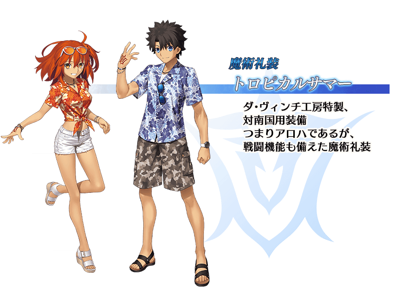
【7月24日(三) 17:00追記】
主線劇本後半中，會發生挑戰好幾次來減少龐大HP的特殊形式戰鬥「Sacrilege Tetrahedron」。
在此戰鬥出現的敵人與普通的HP不同，持有單靠一次戰鬥無法全減的龐大「Total HP」，在給予傷害時同時減少普通HP與「Total HP」。
只要「普通的HP變為0」「限制回合數的經過」「在戰鬥敗北」任一戰鬥就會結束，最終將「Total HP」變為0擊倒敵人。
減少的「Total HP」會繼承到下個戰鬥，反覆挑戰敵人就能使之減少。
設法編組隊伍和裝備等在限制回合內給予大傷害，以厲害敵人的撃破為目標吧！
※從關卡撤退時給予的傷害變為無效，不會減少「Total HP」。
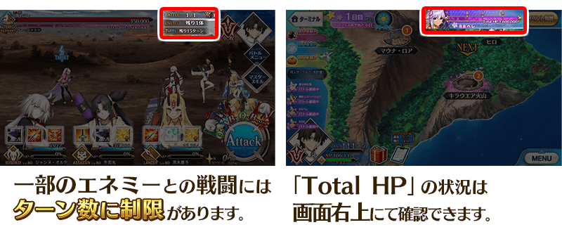
超值攻略方法・其1
本活動的期間中，強化「★4(SR)貞德〔Alter〕(Berserker)」時的獲得經驗值變成2倍。
是讓成為活動加成對象的「★4(SR)貞德〔Alter〕(Berserker)」等級一口氣上升的機會！
◆舉辦期間◆ 2019年7月17日(三) 17:00～8月3日(六) 11:59
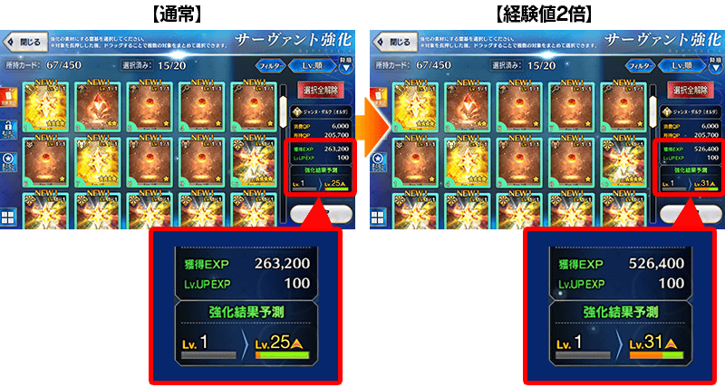
超值攻略方法・其2
本活動的期間中，下表的從者在活動關卡中會得到「同人活動力、同人探求力、同人空想力的掉落獲得量提升」與「絆點數獲得量提升」的加成！
強化對象從者，挑戰活動吧！
※活動加成的效果量因從者而異。
※瑪琇・基利艾拉特的「絆點數獲得量提升」效果，是所謂「我方全體含候補的絆點數獲得量提升」的效果。支援時此效果無效。
※請注意各關卡的活動點數掉落率並非100％。
※自7月15日(一) 17:00，在從者選擇畫面和從者強化畫面等，追加活動加成篩選器。
由於是只顯示於活動活躍從者的便利功能，敬請活用。
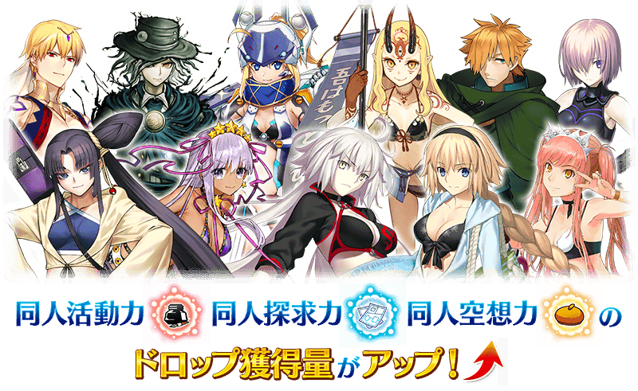
【活動加成的效果量與對象從者】
| 活動 點數 獲得量 |
絆點數 獲得量 |
職階 | 稀有度 | 從者名 |
|---|---|---|---|---|
| ＋40%(※1) | 只限自身 ＋50% |
Archer | ★★★★★ | 貞德 |
| Berserker | ★★★★ | 貞德〔Alter〕 | ||
| MoonCancer | ★★★★★ | BB | ||
| ＋30%(※1) | 只限自身 ＋20% |
Saber | ★★★★ | 女王梅芙 |
| Archer | ★★★ | 羅賓漢 | ||
| Lancer | ★★★★ | 茨木童子 | ||
| Caster | ★★★★ | 吉爾伽美什 | ||
| Assassin | ★★★★ | 牛若丸 | ||
| Avenger | ★★★★★ | 巖窟王 愛德蒙・唐泰斯 | ||
| Foreigner | ★★★★ | 謎之女主角XX | ||
| 我方全體 ＋5% |
Shielder | ★★★ | 瑪琇・基利艾拉特 | |
| ＋20%(※1) | 只限自身 ＋20% |
Saber | ★★★★ | 弗蘭肯斯坦 |
| Archer | ★★★★★ | 阿爾托莉亞・潘德拉剛 | ||
| ★★★★ | 安妮・伯妮＆ 瑪莉・瑞德 | |||
| ★★★★ | 海倫娜・布拉瓦茨基 | |||
| Lancer | ★★★★★ | 玉藻前 | ||
| ★★★★ | 清姬 | |||
| ★★★★ | 源賴光 | |||
| Rider | ★★★★★ | 阿爾托莉亞・潘德拉剛 〔Alter〕 | ||
| ★★★★ | 伊絲塔 | |||
| ★★★★ | 莫德雷德 | |||
| Caster | ★★★★★ | 尼祿・克勞狄烏斯 | ||
| ★★★★ | 瑪莉・安東尼 | |||
| Assassin | ★★★★ | 斯卡哈 | ||
| ★★★★ | 尼托克里絲 | |||
| Berserker | ★★★★ | 織田信長 | ||
| Ruler | ★★★★ | 瑪爾大 |
(※1) 本活動比在2018年舉辦期間限定活動「從者夏日慶！」舉辦期間縮短幾天再加上做為讓全體更容易遊玩「復刻輕量版活動」再調整的一環，關於做為對象從者的活動點數獲得量以比上次舉辦時更增加10%的狀態舉辦。
超值攻略方法・其3
裝備活動限定概念禮裝會提升活動點數的掉落獲得量！
裝備可靠活動道具交換入手的活動限定概念禮裝「ウォーター・シャイン」「ペインティング・サマー」「レディ・フォクシー」的話，在期間限定活動「復刻:從者夏日慶！ 輕量版」的活動關卡中，會提升同人活動力、同人探求力、同人空想力的獲得量。
※請注意各關卡的活動點數掉落率並非100％。
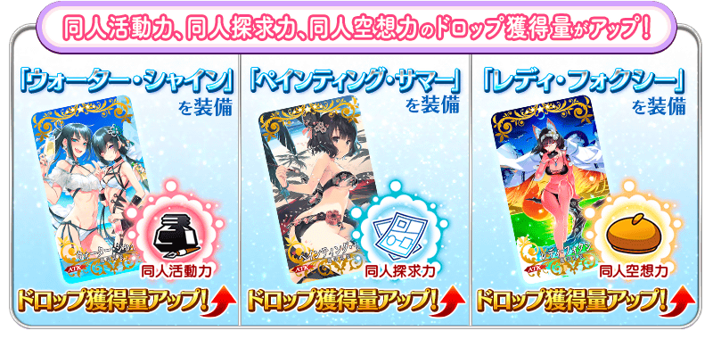
超值攻略方法・其4
裝備期間限定概念禮裝會提升活動道具的掉落獲得數！
裝備在聖晶石召喚Pick Up的期間限定概念禮裝「エメラルド・フロート」「疾風怒濤」「オールナイト・フィーバー」「ヒーロー・オン・ザ・ビーチ」「サンセット・ジャム」「ライティング・ハイ」的話，會提升活動道具「BB$鈔」「耳朵$鈔」「吉爾$鈔」各自的掉落獲得數。
※請注意各關卡的道具掉落率並非100％。
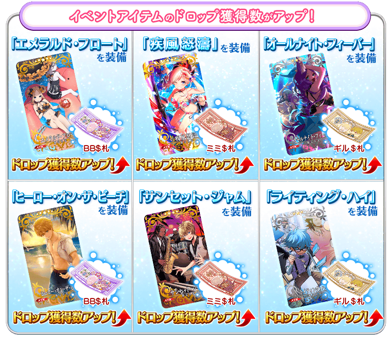

|
★★★★★SSR
|


|
★★★★★SSR
|


|
★★★★★SSR |
◆關於活動報酬指令紋章的注意◆
獲得過上次舉辦時的活動報酬指令紋章的情況，可獲得稀有稜鏡和魔力稜鏡代替指令紋章。
※對象指令紋章的稀有度對應的可獲得報酬有異。
| 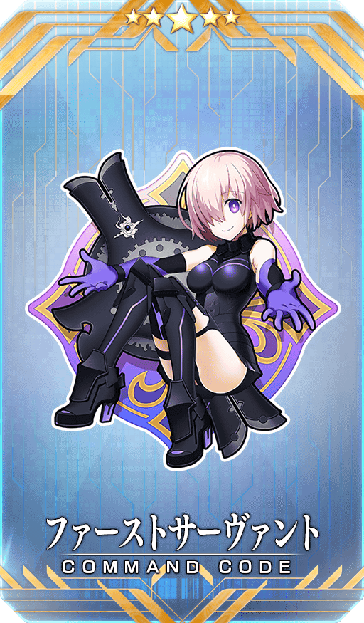 |
【活動限定】 |
| 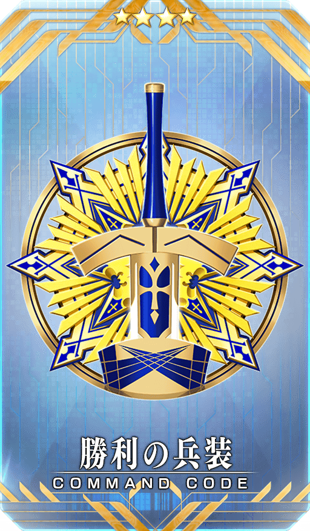 |
★★★★SR |

|
★★★R |


◆靈基再臨◆
使用活動期間中靠「活動道具交換」和「活動點數報酬」入手的「漆黑羽毛筆」，重複4次靈基再臨的話，卡面會有所變化！
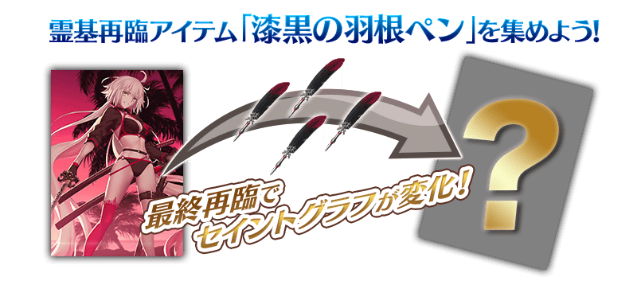
※「★4(SR)貞德〔Alter〕(Berserker)」は、靈基再臨による戰鬥角色的見た目的変化はありません。
◆再入手特典◆
在復刻前的期間限定活動「從者夏日慶！」入手「★4(SR)貞德〔Alter〕(Berserker)」的情況，在本活動能獲得再入手特典。
入手「累計6位以上」「★4(SR)貞德〔Alter〕(Berserker)」的話，第6位以後，每新入手1位就贈送稀有稜鏡1個至禮物箱。
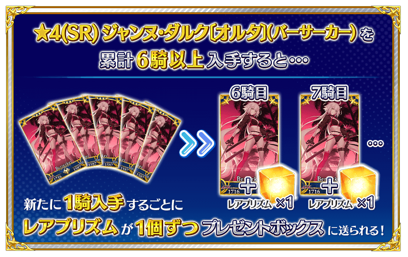

介紹「★4(SR)貞德〔Alter〕(Berserker)」的寶具演出！
在「Fate/Grand Order」官方網站內的公告中，以影片公開寶具演出，敬請確認。

活動道具可自點擊管理室(ターミナル)畫面右上「活動報酬」鍵所顯示的「活動道具交換」畫面，交換以下的道具。
◆交換期間◆
2019年7月17日(三) 17:00～8月10日(六) 11:59
※活動道具交換期間結束後「BB$鈔」「耳朵$鈔」「吉爾$鈔」會消失。
◆能用BB$鈔交換的道具◆
※為了改善識別性，「BB$鈔」的顏色從上次舉辦時變更。 |
【活動限定概念禮裝】
【活動限定靈基再臨素材】
【技能強化＆靈基再臨素材】
【技能強化素材】
【其他道具】 |
◆能用耳朵$鈔交換的道具◆
| 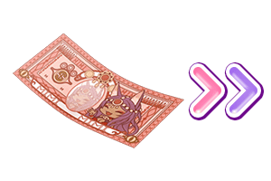 |
【活動限定概念禮裝】 【技能強化＆靈基再臨素材】 【技能強化素材】 【其他道具】 |
◆能用吉爾$鈔交換的道具◆
 |
【活動限定概念禮裝】
【技能強化＆靈基再臨素材】
【技能強化素材】
【其他道具】 |

【7月24日(三) 17:00追記】
以通過期間限定活動「復刻:從者夏日慶！ 輕量版」特定主線關卡及「終局特異點」的御主做為對象，開放高難易度的挑戰關卡。
挑戰關卡就算通過後也不會消失，能無數次挑戰，可以變更從者和概念禮裝的組合後再次挑戰。
※關卡通過報酬、戰利品、御主EXP、魔術禮裝EXP、絆點數只可在初次通過時獲得。
◆挑戰關卡開放時間◆
2019年7月24日(三) 17:00～
◆挑戰關卡參加條件◆
滿足以下條件的御主才能參加
・通過期間限定活動「復刻:從者夏日慶！ 輕量版」的特定主線關卡
・通過「終局特異點」
◆挑戰關卡初次通過報酬◆
傳承結晶 1個
在達文西工房的「稀有稜鏡交換」，追加以期間限定舉辦的上級者做為的高難易度活動「監獄塔中復仇鬼慟哭」關卡開放權。
此關卡開放權，通過「第四特異點 死界魔霧都市 倫敦」的話才會開放能用稀有稜鏡5個交換。
※已通過在2016年舉辦的期間限定活動「監獄塔中復仇鬼慟哭」、在2017年舉辦的期間限定活動「復刻:監獄塔中復仇鬼慟哭」的情況也可遊玩。 ※故事與2016年舉辦時同樣內容。 ※「監獄塔中復仇鬼慟哭」的關卡中適用的支援編成設定為「普通關卡」。
◆道具開放條件◆
通過「第四特異點 死界魔霧都市 倫敦」
◆追加時間◆
2019年7月17日(三) 17:00～(預定)
※在「稀有稜鏡交換」追加的活動「監獄塔中復仇鬼慟哭」關卡開放權做為恆常，沒有交換期限。
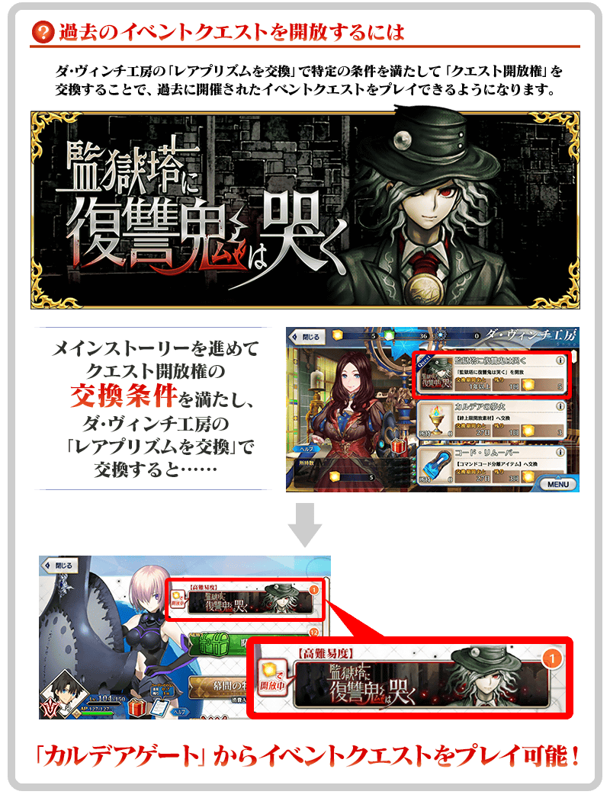
關於通過主線關卡通過後追加的高難易度挑戰關卡
通過所有「監獄塔中復仇鬼慟哭」主線關卡的話，以通過「終局特異點」的御主做為對象，開放更高難易度的挑戰關卡。
在通過挑戰關卡時可獲得報酬。
※通過一次挑戰關卡的話就無法再挑戰。
◆挑戰關卡參加條件◆
滿足以下條件的Master才能參加
・通過所有「監獄塔中復仇鬼慟哭」的主線關卡
・通過「終局特異點」
◆挑戰關卡通過報酬◆
呼鈔 3張
在2019年7月17日(三)的維修後反映的更新內容之中，介紹代表性的內容。
◆追加時間◆
2019年7月17日(三) 17:00～(預定)
於隊伍編成畫面修改為總是可確認敵人的職階傾向
在隊伍編成畫面上方修改為常駐顯示「敵人的職階傾向」。
※關於至今為止每隔一段時間切換顯示的各種特效效果及特攻效果，可在「活動加成詳細確認」確認。
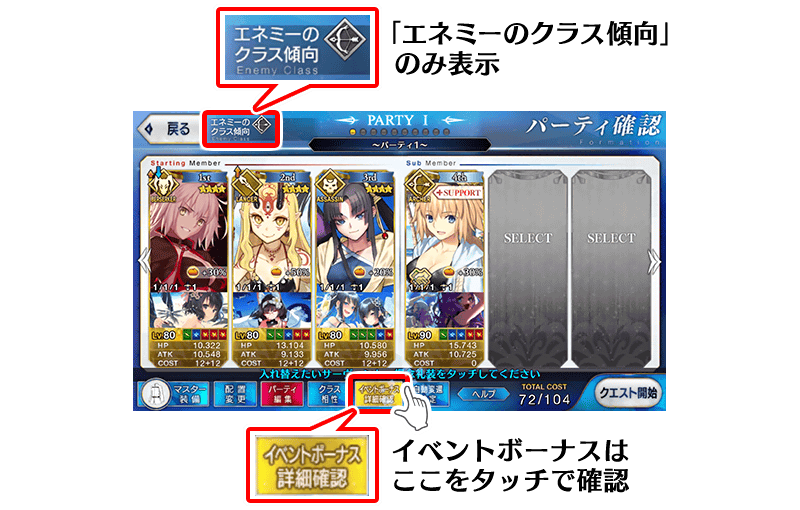
在支援編成畫面修改為可透過概念禮裝的拖曳變更配置
在支援編成畫面修改為可透過概念禮裝的拖曳變更配置。
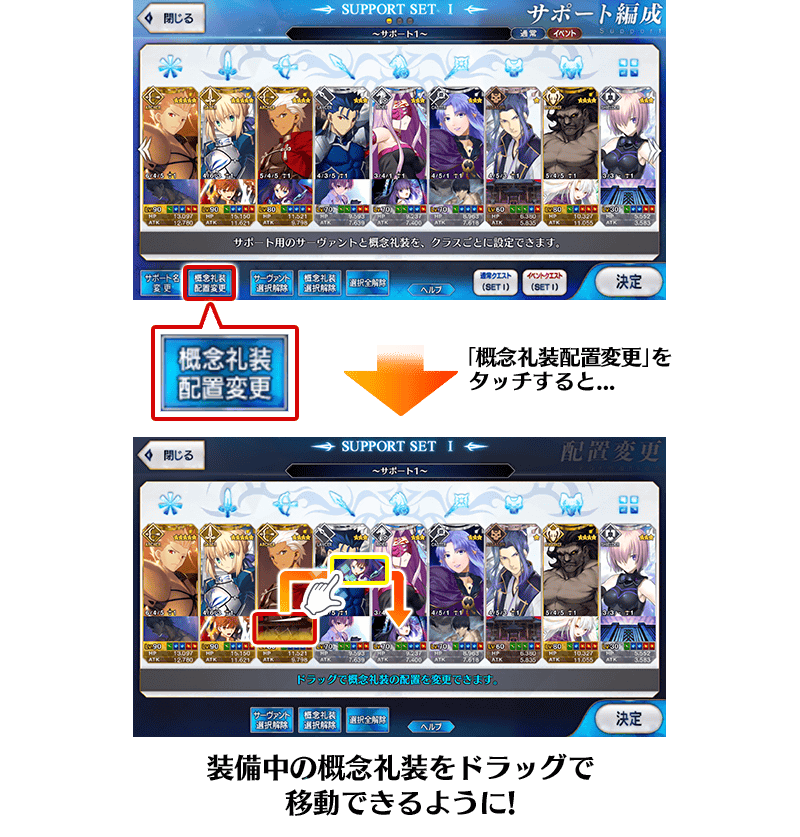
在初次獲得★4(SR)以下的從者時修改為自動上鎖
在初次獲得4★4(SR)以下的從者時修改為自動上鎖。
※有關★5(SSR)從者至今為止同様有第2張以後也自動上鎖。 ※就算在本功能實裝獲得1次的情況也不會自動上鎖。
修改為可從召喚結果畫面繼續召喚
不用從召喚結果畫面回到召喚選擇畫面，修改為可繼續10次召喚。。
伴隨於此，聖晶石召喚・友情點數召喚的各召喚結果畫面的「召喚」鍵變更為「繼續10次召喚」鍵。。
想結束召喚的話，請點擊畫面左上的「關閉(閉じる)」鍵。
※友情點數召喚中，為了繼續10次召喚而友情點數不足的情況，可用剩餘的友情點數的可召喚最多次數繼續召喚。
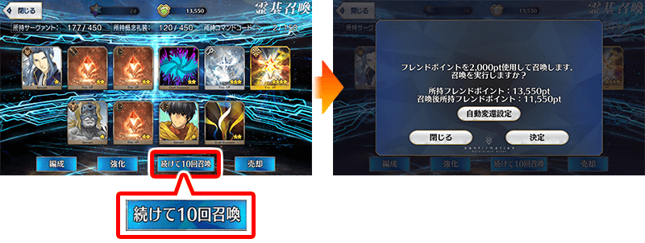
其他還有，期間限定「復刻 從者★慶Pick Up1召喚(每日交替)」和期間限定「復刻 從者★慶Pick Up2召喚」同時舉辦！
關於詳情，請自下述橫幅確認。
■「復刻 從者★慶Pick Up1召喚(每日交替)」詳細情報

■「復刻 從者★慶Pick Up2召喚」詳細情報